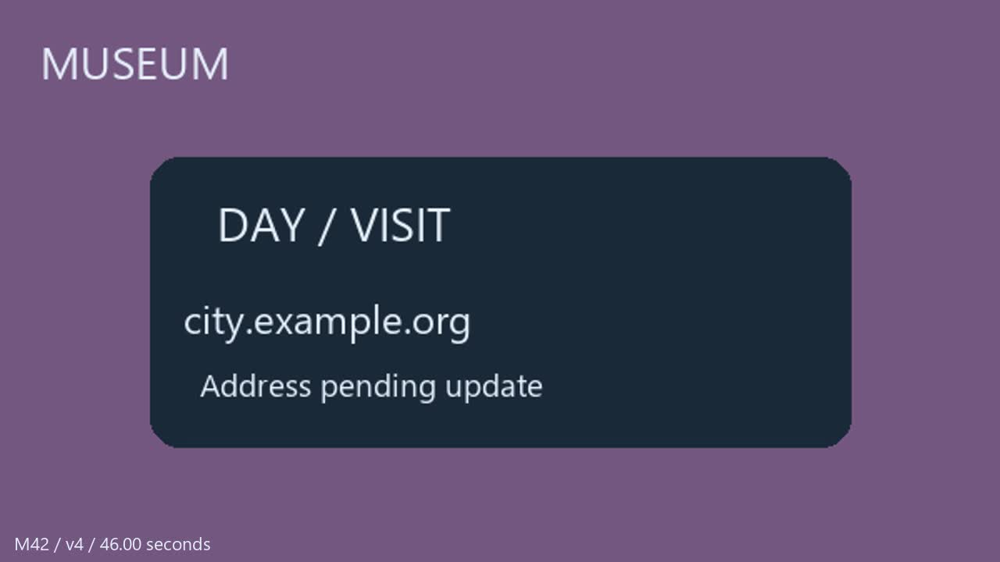

听懂最终决定，
把依赖和发布状态一起落实。
重排、拆分与变速后的镜头区间，跨工单的前置依赖，以及需要联动更新的渠道发布计划。Agent 的交付是持久化业务状态：一份正确的会议总结还不够。
从多模态证据到系统操作
制作团队在审片会上修改交付要求。NORA 管画面与排期，MAYA 管法务和品牌许可，ELI 管技术诊断；JAY 的提议需要相应权限者采纳。Agent 必须结合实际播放画面、说话人、语音与源片证据，建立最终的工单和发布状态。
受控合成会议；原有技术诊断与多方权限冲突保留。11:15 起追加最终交付变更，16:31 再次确认许可范围。
公开输入与系统接口
会议录屏、独立 ASR、源视频和音轨、初始工单与发布计划，以及不含审核答案的编辑事件表 conform.json。
工单事务支持拆分与重复关联；发布事务检查当前 revision，并根据真实依赖闭包核验状态与阻塞清单。
这次增加的难度
- 时间对齐：镜头被拆开、插入其他内容、变速；两项任务仅覆盖原镜头中间的局部区间。
- 工单依赖：保留历史记录、拆分捆绑请求、合并重复项，区分直接边与传递关系。
- 发布联动：八个计划只存直接需求；任何传递前置任务被阻塞，都可能使发布进入 hold。
- 预算约束：取证、落库、修正与复核必须共用 15 轮主模型请求。
时间映射示例（评后解释）
Harbor 第一段红色插镜在 v5 变成两个不连续区间：7.0–9.0 秒与15.0–16.6 秒。后半段播放速度改变，不能只加一个固定偏移，也不能用一条工单跨过中间内容。
模型需先识别原镜头，再与公开编辑事件求交、线性映射。此处答案只在评后展示，未进入候选模型的工具或输入。
Agent 实际收到的任务原文
统一感知与调用预算
15 轮指主模型逻辑请求轮数，一轮可发出多个工具调用；相同输入的网络重试不增加逻辑轮数，真实重试次数在轨迹中另计。视觉服务的 API 请求另记，不计入主模型轮数；缓存命中仍扣逻辑资源预算。主模型 reasoning=high，每轮最多 9,000 输出 tokens。代理报告的模型 ID 不构成上游身份的独立认证。
四个模型的同协议实测
kimi-k3 使用网关 ID k3。接口故障记 N/A；超出既定预算后的合法残留状态可以计分。每模型选择首个有效 trial；基础设施失败最多进行两次全新重测，所有尝试保留。原定一次重测；因 GLM 的重测又遭共同视觉服务故障，已在再次运行前公开追加一次恢复机会。另一次 GLM 恢复受到执行端并发引发的网关限制，单独作废，并按记录串行补跑一次。没有按目标分数截断、替换或事后改权重。
冻结的验收规则
| 分项 | 满分 | 判定 |
|---|---|---|
| 39 项工单字段 | 60 | 身份、时间区间、负责人、状态、优先级；区间两端容差各 ±0.3 秒 |
| 工单关系 | 15 | 12 分检查存在的关系，3 分检查不应添加关系的工单；拆分、去重及保留要求 |
| 8 个发布计划 | 15 | 身份/版本/保留备注、直接需求、状态、传递阻塞清单 |
| 保留与无额外操作 | 10 | 8 条历史工单及归档计划完整保留 5 分；无额外或删除记录 5 分 |
评分器按数据库终态确定性计算，无 LLM 裁判、无分数上限。关系分项采用字段部分分，并单独显示完整通过数量。原始状态基线 21.99 分；标准答案通过业务 API 的 5 次事务回放为 100 分。另保留旧 80/10/10 权重在本次终态上的辅助工单分，不能视作旧版实测结果。
逐项检查
所有尝试与基础设施故障
逐轮查看取证、变更和复核
下方展示接口可见输出、工具参数与返回值。可核对 Agent 是否实际读取编辑表、是否写入工单和依赖，以及发布事务是否成功。
用终态和轨迹定位错误
区分可观察的错误、解释性推断与基础设施故障。共同观察工具也可能出错；这次测试衡量统一工具条件下的任务执行能力。
已核实的一处共同视觉工具错误：不要把所有时间误差归因于主模型
在 GLM 第二次尝试的观察结果中，固定视觉服务把 M42/v4 的 46.00 秒描述为“CALIBRATION / SECOND”；实际解码帧仍是 DAY / VISIT 联系面板。GLM 随后的接口可见输出据此把 DAY 结束点推断为 46 秒。这次尝试最终因另一项视觉请求断连而无效。
该证据说明：共同工具提供相同条件，却不保证识别正确。不能把所有终态区间错误一概归为主模型推理失败。缓存原样保留，评测过程中未人工纠正某个模型的观察输入。
查看实际观察缓存与输入哈希 →
评后独立解码的原始帧，源文件与评测冻结快照相同。
发布依赖的可交互检查
上图使用评后公开的标准答案。实际分数以上方终态检查为准，任务依赖不自动改变工单本身的授权状态。
代码、输入与评测证据
协议与关键文件哈希
查看旧版 v2 展示 →（任务、媒体、工具路线和评分权重不同，结果不横向混用。）